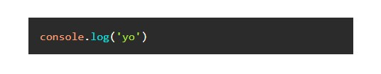
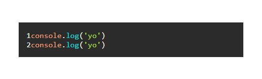
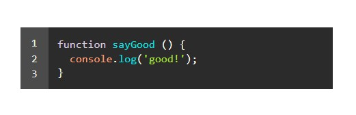

寫起來不怕以後忘記。
引入方式
highlight.js 主要就兩隻檔案：
- 每個主題的 CSS 檔案
- 渲染程式碼區塊的 JavaScript 檔案
這邊我只列幾個比較方便的，詳細請直接參考這裡。
- CDN 引入
1
2
| <link rel="stylesheet" href="//cdnjs.cloudflare.com/ajax/libs/highlight.js/11.4.0/styles/default.min.css">
<script src="//cdnjs.cloudflare.com/ajax/libs/highlight.js/11.4.0/highlight.min.js"></script>
|
像 default.min.css 可以換成自己喜歡的主題，例如：agate.min.css
如果不知道有些主題的檔名是什麼，建議直接下載檔案來看就知道了（像 A 11 Y DARK 的檔名是 a11y-dark.min.css）。
- 把檔案下載到電腦，再指定檔案路徑
先到這裡下載檔案，滑到下面選擇要支援的語言，再按 Dowload 就好囉。
1
2
3
4
|
<link rel="stylesheet" href="./plug-in/highlight_js/tomorrow-night-bright.min.css">
<script src="./plug-in/highlight_js/highlight.min.js"></script>
|
這樣引入的部分就完成了。
啟動方式
highlight.js 的原理是在 DOM 載入時自動去抓 pre 跟 code 的部分來渲染程式碼區塊，所以假設有段 HTML 如下：
1
2
3
| <pre>
<code class="language-javascript">console.log('yo')</code>
</pre>
|
（它是用 class 來判斷語言的，雖然說有自動偵測的功能，但還是建議加一下比較好。）
接著記得加上下面的 code 來啟用 highlight.js：
1
2
3
| <script>
hljs.highlightAll();
</script>
|
這樣就會看到水噹噹的 code 囉：

補充－加上程式碼行數
highlight.js 本身是沒有行數功能的，所以要到這裡下載另一個套件。
文件裡有詳細寫要怎麼安裝跟使用，這邊只示範我的作法：
- 引入檔案
1
2
3
| <script src="path/to/highlight.min.js"></script>
<script src="path/to/highlightjs-line-numbers.min.js"></script>
|
- 啟動方式
1
2
3
4
| <script>
hljs.highlightAll();
hljs.initLineNumbersOnLoad();
</script>
|
接著就會顯示行數了：

不過顯而易見，這套件似乎沒預設樣式，所以我加了一段 CSS 來優化：
1
2
3
4
5
6
7
8
9
10
11
12
13
14
15
16
17
18
19
20
21
22
23
24
25
26
27
28
29
30
31
32
33
34
35
36
37
38
39
40
41
42
43
|
pre code.hljs {
padding: 0;
}
.hljs-ln-numbers {
-webkit-touch-callout: none;
-webkit-user-select: none;
-moz-user-select: none;
-ms-user-select: none;
user-select: none;
text-align: center;
color: #EAEAEA;
vertical-align: top;
padding-top: 0.1em !important;
padding-bottom: 0.1em !important;
padding-left: 1em !important;
padding-right: 1em !important;
background-color: rgb(255 255 255 / 15%);
}
.hljs-ln-code {
padding-left: 0.8em !important;
}
.hljs-ln tr:first-child .hljs-ln-numbers {
padding-top: 0.8em !important;
}
.hljs-ln tr:last-child .hljs-ln-numbers {
padding-bottom: 0.8em !important;
}
.hljs-ln tr:first-child .hljs-ln-code {
vertical-align: bottom;
}
.hljs-ln tr:last-child .hljs-ln-code {
vertical-align: top;
}
.hljs-ln tr:only-child .hljs-ln-code{
vertical-align: middle;
}
|

這樣就好看多了。
補充一些 Options
- 只有一行時要不要顯示行數
1
2
3
| hljs.initLineNumbersOnLoad({
singleLine: true
});
|
- 設定第一行的起始數字
1
2
3
| hljs.lineNumbersBlock(myCodeBlock, {
startFrom: 10
});
|